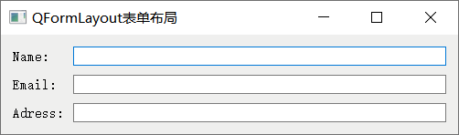

首页 > 编程笔记
Qt QFormLayout表单布局的用法（超级详细）
QFormLayout 是 Qt 提供的一种布局工具（或者理解为一种布局控件），专门用来生成类似图 1 的界面：
Qt 提供了很多种输入框控件，包括 QLineEdit 单行输入框、QTextEdit 多行输入框等。通常情况下，每个输入框的旁边都会附带一些文字（又称标签），用来提示用户需要输入的信息。例如，图 1 中第一个输入框的标签为 "Name"，提示用户在此输入款内填写自己的姓名。QFormLayout 可以容纳很多个输入框控件以及对应的标签，并将它们从上到下依次排列在界面上。
实际上，生成类似图 1 界面的方法有很多种，比如：
第 1 种方法最大的弊端在于，各个控件的位置和尺寸都是固定不变的，不会随着父窗口尺寸的改变而改变。第 2、3、4 种方法都可以实现，但建议大家使用 QFormLayout 控件，因为实现相同的功能，使用 QFormLayout 编写的代码量最少，开发效率最高。
QFormLayout 底层是用 QGridLayout 网格布局控件实现的，和后者不同的是，QFormLayout 只包含 2 列，且第一列通常放置第二列控件的标签。使用 QFormLayout 布局控件之前，程序中应引入
下表给大家罗列了操作 QFormLayout 对象常用的一些成员方法：
举个简单的例子：

图 3 QFormLayout表单布局实例

图 1 QFromLayout表单布局
图 1 QFromLayout表单布局
Qt 提供了很多种输入框控件，包括 QLineEdit 单行输入框、QTextEdit 多行输入框等。通常情况下，每个输入框的旁边都会附带一些文字（又称标签），用来提示用户需要输入的信息。例如，图 1 中第一个输入框的标签为 "Name"，提示用户在此输入款内填写自己的姓名。QFormLayout 可以容纳很多个输入框控件以及对应的标签，并将它们从上到下依次排列在界面上。
实际上，生成类似图 1 界面的方法有很多种，比如：
- 分别创建 3 个 QLabel 控件和 3 个 QLineEdit 控件，手动指定它们的位置；
- 在 QHBoxLayout 中嵌套 3 个 QVBoxLayout，又或者在 QVBoxLayout 中嵌套 3 个 QHBoxLayout，然后再添加 3 个 QLabel 控件和 3 个 QLineEdit 控件；
- 使用 QGridLayout 创建一个 3 行 3 列的表格，向表格中添加 3 个 QLabel 控件和 3 个 QLineEdit 控件。
- 使用 QFormLayout 表达布局控件实现。
第 1 种方法最大的弊端在于，各个控件的位置和尺寸都是固定不变的，不会随着父窗口尺寸的改变而改变。第 2、3、4 种方法都可以实现，但建议大家使用 QFormLayout 控件，因为实现相同的功能，使用 QFormLayout 编写的代码量最少，开发效率最高。
QFormLayout 底层是用 QGridLayout 网格布局控件实现的，和后者不同的是，QFormLayout 只包含 2 列，且第一列通常放置第二列控件的标签。使用 QFormLayout 布局控件之前，程序中应引入
<QFormLayout>头文件。每一个表单布局控件都是 QFormLayout 类的一个实例对象，该类仅提供了一个构造函数：
QFormLayout(QWidget *parent = Q_NULLPTR)
下表给大家罗列了操作 QFormLayout 对象常用的一些成员方法：
| 成员方法 | 功 能 |
|---|---|
| void QFormLayout::addRow(QWidget *label, QWidget *field) | 将指定的 field 控件和存储描述信息的 label 控件添加到表单控件中的末尾。 |
| void QFormLayout::addRow(const QString &labelText, QWidget *field) | 将指定的 field 控件和 labelText 描述信息添加到表单控件的末尾。 |
| void QFormLayout::insertRow(int row, const QString &labelText, QWidget *field) | 将指定的 field 控件和 labelText 描述信息插入到表单控件中指定行的位置。 |
| void QFormLayout::removeRow(int row) | 删除表单控件中的指定行。 |
| void QFormLayout::removeRow(QWidget *widget) | 删除表单控件中 widget 控件所在的行。 |
| void setRowWrapPolicy(RowWrapPolicy policy) |
设置标签的显示格式，默认标签位于控件的左侧，还可以位于控件的上方。 RowWrapPolicy 是 QFormLayout 中定义的枚举类型，该类型包含 3 个值：
|
| void QFormLayout::setSpacing(int spacing) | 将行间距和列间距设置为 spacing。 |
举个简单的例子：
#include <QApplication>
#include <QWidget>
#include <QLineEdit>
#include <QFormLayout>
int main(int argc, char *argv[])
{
QApplication a(argc, argv);
//创建主窗口
QWidget widget;
widget.setWindowTitle("QFormLayout表单布局");
//创建 4 个按钮和 1 个文本框
QFormLayout* layout = new QFormLayout();
//设置表单中的标签都位于控件的上方
layout->setRowWrapPolicy(QFormLayout::WrapAllRows);
//添加 3 行输入框和标签
layout->addRow("Name:",new QLineEdit());
layout->addRow("Email:",new QLineEdit());
layout->addRow("Adress:",new QLineEdit());
//设置行间距和列间距为 10
layout->setSpacing(10);
//将 layout 表单添加到 widget 窗口中
widget.setLayout(layout);
widget.show();
return a.exec();
}
程序运行结果为：
图 3 QFormLayout表单布局实例
关注公众号「站长严长生」，在手机上阅读所有教程，随时随地都能学习。内含一款搜索神器，免费下载全网书籍和视频。

微信扫码关注公众号